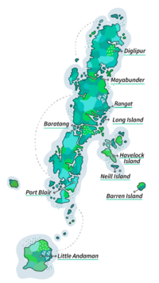

The Andaman and Nicobar Islands, a picturesque archipelago in the Bay of Bengal,
are celebrated for their pristine beaches, crystal-clear waters, and vibrant marine life.
Renowned for their stunning natural beauty, including Radhanagar Beach and the coral reefs of North Bay,
these islands captivate visitors with their serene landscapes and tropical charm.
The region's rich history is highlighted by landmarks such as the Cellular Jail in Port Blair,
which reflects its colonial past and role in India's freedom struggle.
Festivals like the Island Tourism Festival showcase the local culture and traditions,
adding a lively dimension to the islands' tranquil environment.
With their blend of unspoiled nature, historical significance,
and vibrant culture, the Andaman and Nicobar Islands offer an enchanting escape for relaxation and adventure.
|
 |